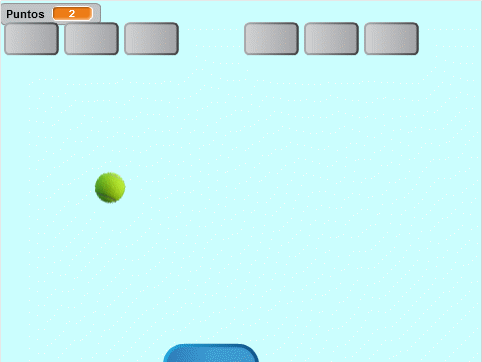
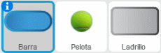
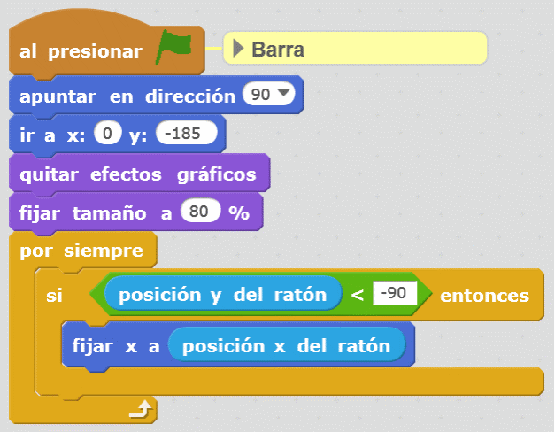
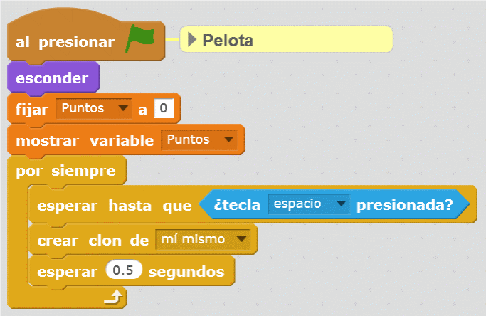
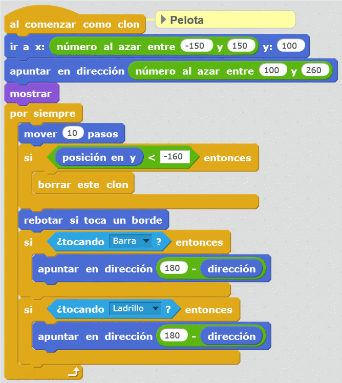
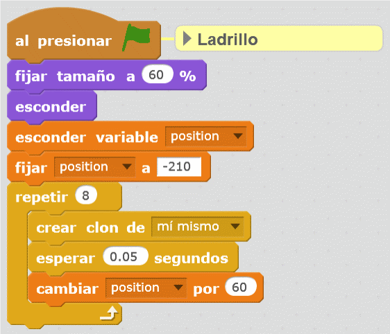
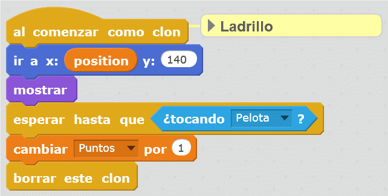

6. Breaks Bricks¶
{kind=link}

En aquesta pràctica programarem un joc que consisteix a trencar els maons amb una pilota que rebota en un bar. Cada maó trencat ens donarà un punt.
; BR |
Comencem el | Editor_de_scratch |.
; BR |
Eliminem el gat prement -li amb el botó dret del ratolí i, a continuació, fem clic.
; Suprimeix-Gato |
; BR |
Afegim tres personatges nous. Un botó blau, una bola de tennis i un botó gris.

; BR |
A continuació, canviarem els noms dels tres personatges nous prement el botó blau "i " de cadascun dels personatges.
Anomenem el botó blau.
Anomenem la pilota de tennis.
Anomenem el maó al botó gris.
; BR |
Ara crearem la variable ** punts **.
Dins de la pestanya Dades | Dades |,
Premeu Creeu una variable | Create-variable |
Canviem el nom de la variable per ** punts **

Finalment, premeu el botó ** ok **
Aquesta variable emmagatzemarà els punts que obtenim cada maó.
; BR |
Ara crearem la variable ** posició **.
Dins de la pestanya Dades | Dades |,
Premeu Creeu una variable | Create-variable |
Canviem el nom de la variable a ** POSICIÓ **
Aquesta variable emmagatzemarà la posició de cadascun dels maons en iniciar el programa.
; BR |
Ara afegirem el ** bar **.
Primer seleccionem la barra i després la pestanya Programes.
Afegim els blocs següents.

; BR |
A continuació, afegirem el programa ** Ball **.
Primer seleccionem la barra i després la pestanya Programes.
Afegim els blocs següents.


; BR |
Finalment, afegirem el programa ** de maó **.
Primer seleccionem el maó i després la pestanya Programes.
Afegim els blocs següents.


; BR |
Ara demostrarem que tots els programes funcionen correctament jugant a un joc.
{kind=link}
{kind=link}
{kind=link}
{kind=link}
{kind=link}
Exercicis¶
- Modifiqueu el programa de manera que apareguin més maons a la part superior.